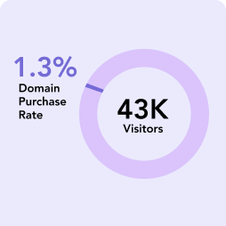
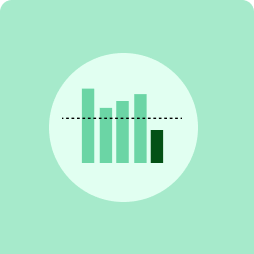

Product Design
New Domain Tool
Conversion / UX / A/B Testing

Conversion / UX / A/B Testing
Overview
Redesigning Wix's domain search tool to lift conversion - from a cluttered inline experience to a dedicated results page, validated by an A/B test.
Visitors, not exclusively Wix users, have the opportunity to directly acquire a domain name through Wix. Wix enables visitors to explore and acquire a personalized domain for their websites. Through the Wix domain tool, visitors can search for available domain names, make purchases, and connect them not only to their Wix websites but also to any other website.

The Problem
The domain tool was generating revenue but leaving significant conversion on the table. Three compounding issues were holding it back.

The search results were displayed inline on the same page in collapsed mode, creating a cluttered, hard-to-navigate experience that pushed users away before they committed to a purchase.
Accumulated technical debt had introduced multiple bugs. A recent security incident added urgency - the redesign had to include a new security layer without disrupting the user journey.

Competitors displayed pricing upfront, offered prominent domain suggestions, and dedicated full pages to search results. Wix did none of these - a gap that was costing market share.
Design Decisions
Not every call was obvious. Each decision had a real internal debate behind it - here's the question, what we found, and what we shipped.
On the original page, results appeared collapsed inline - pushing the hero down and leaving the experience feeling unresolved. The question was whether a separate page would actually help, or just add a navigation step users would drop off on.
Introducing a navigation step creates a moment of drop-off. The inline approach, despite being cluttered, kept everything on one surface.
Users were already abandoning the inline experience - the collapsed results were competing with hero content and impossible to parse. The friction of a new page was lower than the cost of an unreadable state.
Route users to a dedicated results page. Give search results the full focus and space they need to work.

Users searching for domains often start with a narrow, single-term query. If that exact domain is taken, most stop - not because there's nothing available, but because nothing else was surfaced prominently enough to explore.
The redesign surfaces recommended and suggested domain names at the top of results, visually differentiated and immediately actionable. The goal: shift behavior from single-query searches to exploratory ones, increasing the chance a user finds something worth buying.

Previously, if the desired domain was available, we showed it and stopped. The debate: would showing alternatives at that moment introduce doubt and pull users away from a purchase they were already ready to make?
A user who found their ideal domain is one click from converting. Alternatives introduce comparison and doubt at the worst possible moment.
Users who engaged with alternatives had higher purchase completion rates, not lower. Options created confidence in the choice - not paralysis. Users shown only their primary domain had a higher rate of leaving without buying.
Show alternatives always - but frame them as supporting the decision. The primary domain stays visually dominant; alternatives are "also consider," not competing choices.

Wix's domain prices were higher than some competitors. The deliberate call was to hide them - hoping users would reach checkout before comparing. But hiding prices was becoming a liability.
Showing prices early invites direct comparison with cheaper alternatives before users experience any of Wix's added value.
Every major competitor showed prices upfront - not showing them looked suspicious. Checkout abandonment was costly. And users who saw the price and stayed were more committed buyers, not fewer.
Show prices inline. Losing price-sensitive users early is cheaper than losing them at checkout - and transparency builds more trust than the price difference loses.

Final Design
The full flow - from domain search to results - as shipped.
Validation
We ran a controlled test comparing the original experience (Version A) against the redesigned flow (Version B) across a live sample of users.

Search results appear collapsed inline on the landing page. The hero image shifts down. No upfront pricing. No prominent domain suggestions. Single result focus.

Dedicated search results page with prominent suggestions, alternative domain options surfaced even when the primary domain is available, and prices shown upfront throughout the flow.
Every primary metric moved in the same direction. We shipped Version B.
Impact
Measured against the control (Version A) over the test period. All metrics improved.